§5.4 定积分的应用
一、定积分的微元法
定义：
∫abf(x)dx=x→0limi=1∑nf(ξi)Δxi
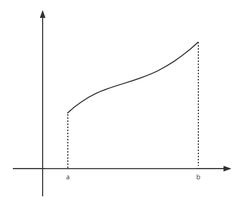
- 分割
- 代替
- 求和
- 取极限
AA(x)dA(x)dA=∫abf(x)dx=∫axf(t)dt=f(x)dx=f(x)dx
曲ΔAi≈直f(ξi)Δxi
二、几何应用
1. 面积
- 直角坐标下
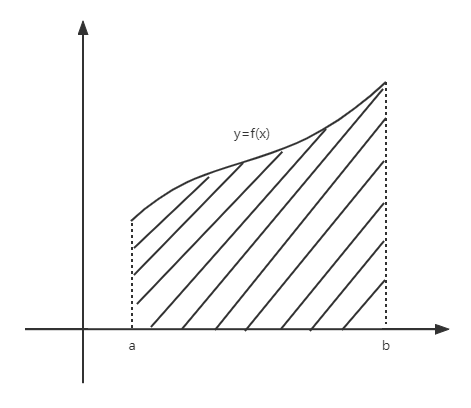
A=∫abf(x)dx
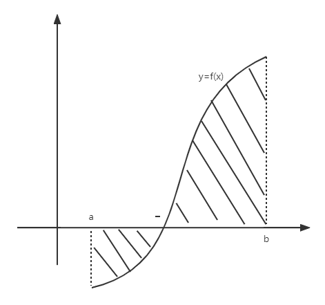
A=∫ab∣f(x)∣dx
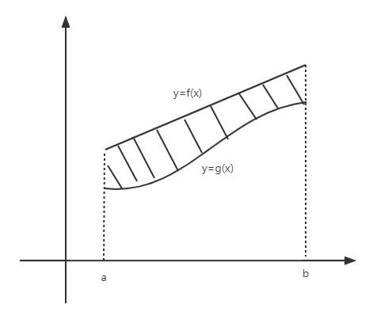
A=∫ab∣f(x)−g(x)∣dx
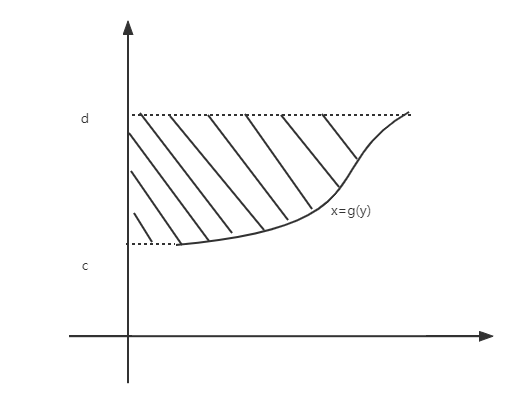
A=∫cdg(y)dy
例：求 y2=2x 与 y=x−4 所围面积
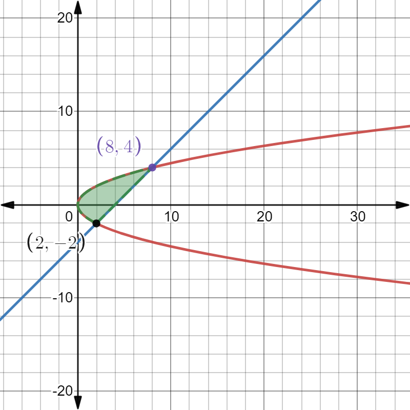
解：
{y2=2xy=x−4⇒{x=2y=−2或{x=8y=4
法1：
A=∫08[f(x)−g(x)]dx=∫02[2x−(−2x)]dx+∫28[2x−(x−4)]dx=342x23∣02+(4x+322x23−21x2)∣28=18
法2：
g(x)={−2xx∈(0,2)x−4x∈(2,8)
A=∫−24[(y+4)−2y2]dy=(21y2+4y−61y3)∣−24=18
- 极坐标下
ΔAidAA≈21ϕ2(ξi)Δθi=21ϕ2(θ)dθ=∫αβ21ϕ2(θ)dθ
例：
-
求 r2=a2cos2θ 所围面积
A=4∫04π21ϕ2(θ)dθ=2∫04πa2cos2θdθ=2a2×21sin2θ∣04π=a2
-
求 ρ=2cosθ 所围面积
A=2∫02π214cos2θdθ=2⋅(θ+21sin2θ)∣02π=π
- 参数形式
{x=ϕ(t)y=ψ(t),α≤r≤β
则有
A=∫αβ∣ϕ(t)ψ′(t)∣dt,x:a→b,t:α→β
例：a2x2+b2y2=1(a>0,b>0) 所围面积
解：原式参数方程表示如下
{x=acosty=bsint,t∈[0,2π]
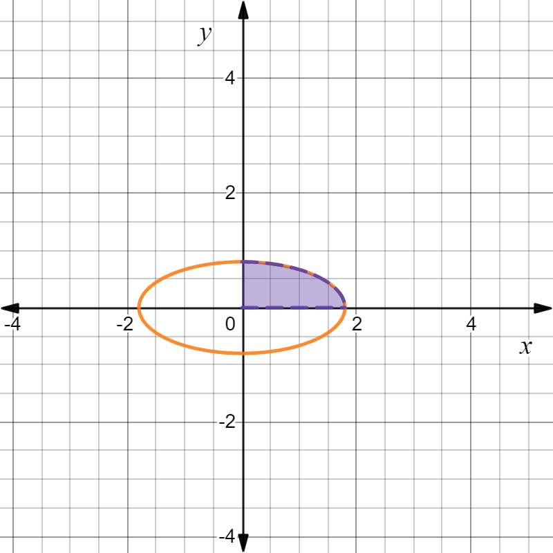
A=4∫0ab1−a2x2dx=4ab∫0aa2−x2dx=4ab∫2π0−asint(asint)dt(x=acost)=4ab∫02πsin2tdt=4ab⋅21⋅2π=πab
A=4∫02π∣bsint⋅asint∣dt=4ab∫02πsintdt=πab
2. 体积
ΔVi≈f(ξi)Δxi⇒V=∫abA(x)dx=π∫ab[f(x)]2dx
例题
- 求 a2x2+b2y2=1 绕x轴，y轴旋转一周所围成的体积
- V1=π∫−aaa2b2(a2−x2)dx=34πab2
- V2=π∫−bba2(1−b2y2)dy=34πa2b
- 求 a2x2+b2y2+c2z2=1 （椭球面）所围成的体积
xb2y2+c2z2SV=x0=1−a2x02=πb2(1−a2x02)c2(1−a2x02)=πbc(1−a2x02)=∫−aaSdx=34πabc
- 求 x2+y2=a2,x2+z2=a2 所围立体体积
解：V=8∫0a(a2−x2)dx=316a3
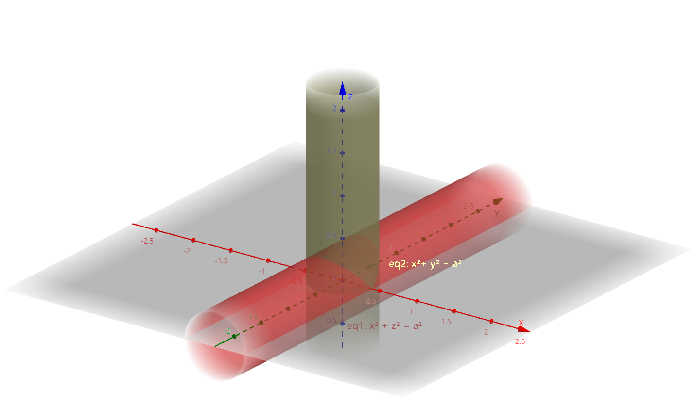
3. 弧长
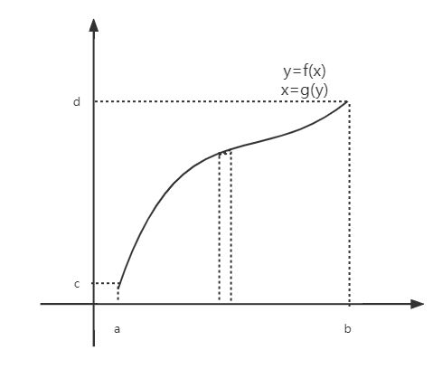
ylΔSidSS=kx=(b−a)2+k2(b−a)2≈(Δx)2+(Δy)2=1+f′2(x)dx=∫abdS={∫ab1+f′2(x)dx∫cd1+g′2(y)dy
参数方程
{x=ϕ(t)y=ψ(t),α≤t≤β,S=∫αβϕ′2(t)+ψ′2(t)dt
极坐标方程
r=ρ(θ),α≤θ≤β,S=∫αβρ2(θ)+ρ′2(θ)dθ
例
求 {x=a(t−sint)y=a(1−cost)(a>0) 弧长
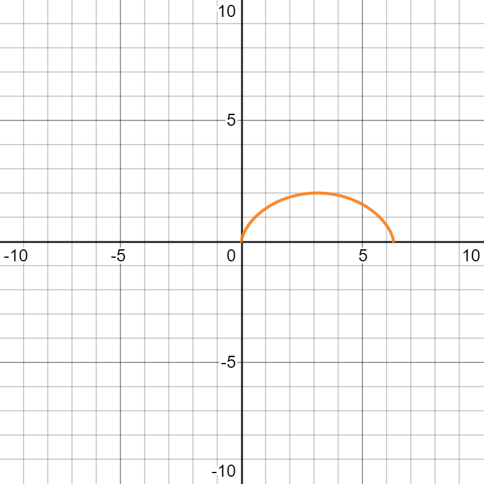
解：
S=∫02π[a(1−cost)2]+(asint)2dt=∫02πa2−2a2cost+a2dt=2a∫02π1−costdt=2a⋅2∫02πsin2tdt=2a⋅2[(−cos2t)∣02π]=8a
4. 曲率
定义：平面曲线上各点的弯曲程度为曲率
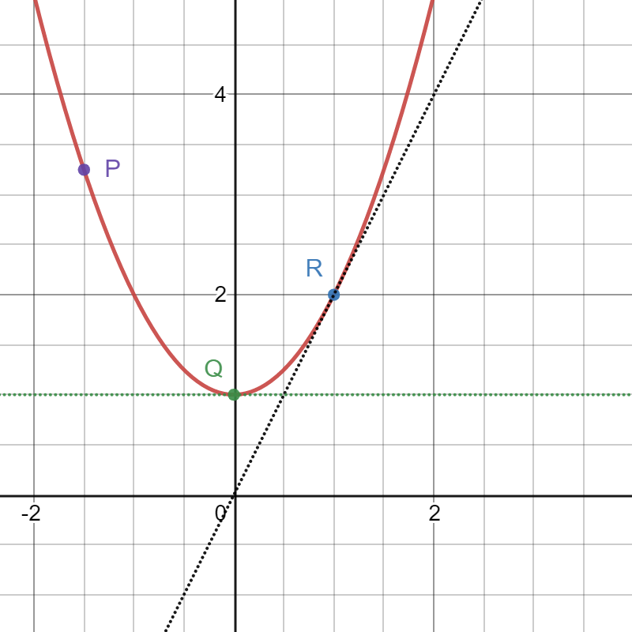
x=x(t),y=y(t),α≤t≤β
-
平均曲率 k=ΔSΔα=PQ⌢α′−α
-
曲率 K=∣Δt→0limΔSΔα∣=∣dSdα∣
∵α(t)=arctanx′(t)y′(t),dtdS=x′2(t)+y′2(t)
∴dSdα=S′(t)α′(t)=[x′2(t)+y′2(t)]23x′(t)y′′(t)−x′′(t)y′(t)
k=(x′2+y′2)23∣x′y′′−x′′y′∣
-
若曲线由 y=f(x) 给出，则有 k=(1+y′2)23∣y′′∣
-
若曲线由 r=r(θ) 给出，则有 k=(r2+r′2)23r2+2r′2−rr′′